来源：https://jwc04jmpug6.feishu.cn/docx/UucqdINu3ouRaRxuRc1c4HM6nHb
小红书虚拟资料引流分享
大家好，我是巧克力。今年 7月 11 日加入生财的新人。
感谢生财团队提供的机会，很高兴能和大家分享我的变现经历。如果你也是生财新人，对虚拟资料引流感兴趣，但是还没有找到下一步的行动方向，希望今天的分享能够让你有一点点收获～
我的分享主要有以下几个部分
1、航海开始到今天的成绩
2、资料引流变现路径
3、关于打造爆款的方法
4、没有爆款为什么还能坚持发笔记
5、私信如何引流到私域
航海从9月9日开船至9月26日。我一共操盘了三个小红书号（两个考研，一个专升本）
下图👇是我三个号的浏览数据，大家仔细看可能会觉得，这数据也能行？
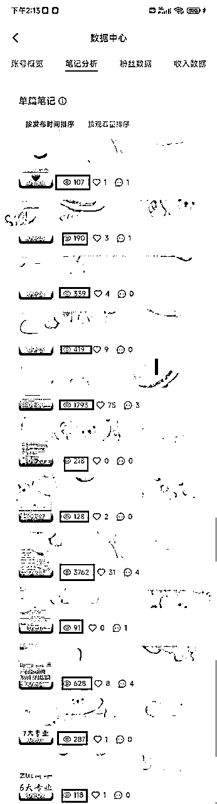
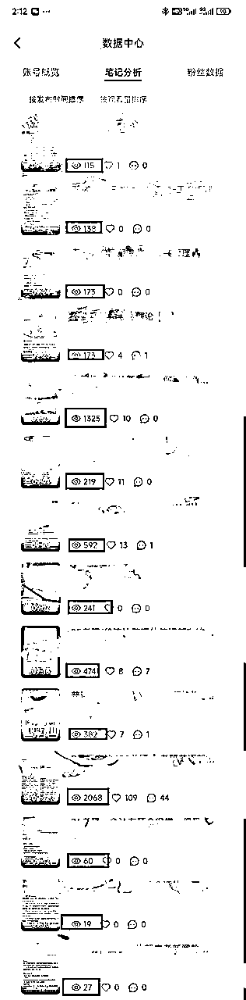
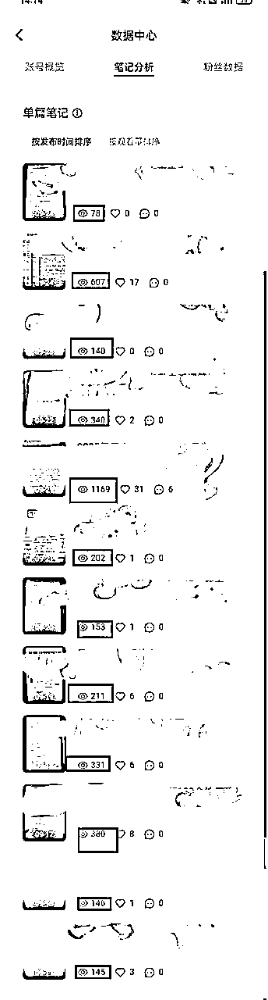
上面的三个账号，没有特别大的爆款，单篇阅读量最高的也就三千多。其他笔记都是一百多一百多。这些一百多的笔记，居然也有人来私信，然后成交的都是这些来私信的。
直接在评论区评论的，很多都是白嫖，有的连微信都不愿意加。
我最大的感觉就是大力出奇迹，一定要不停的发笔记。
截止目前：
专升本加微信47人，转化4人，转化率8.5%
考研加微信29人，转化6人，转化率20%
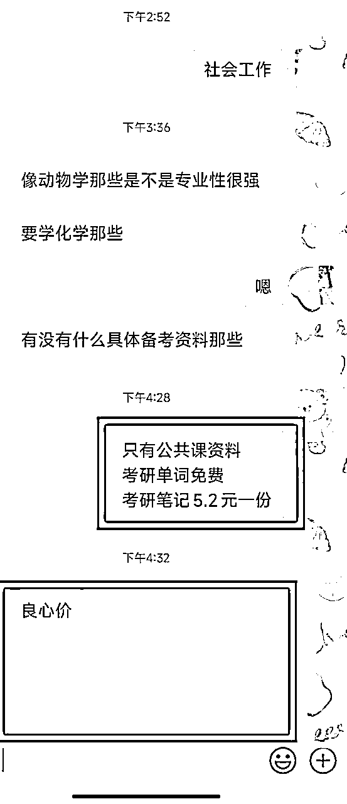
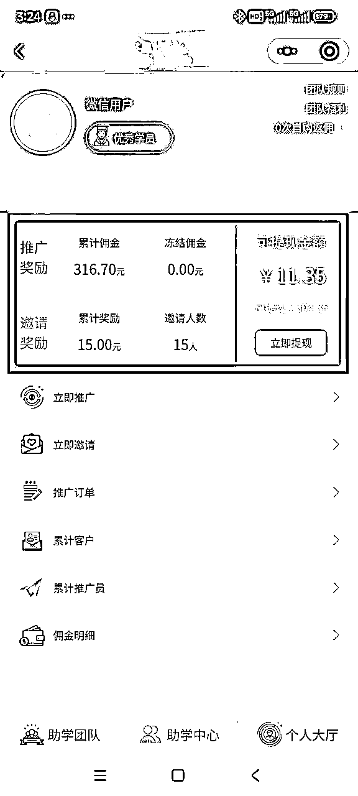
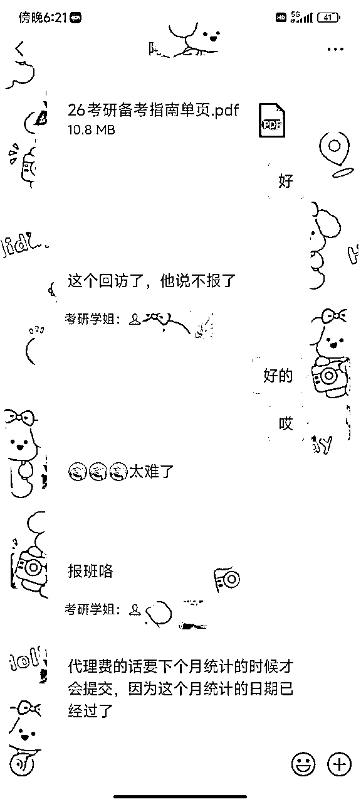
以上就是航海15天以来的收获，一共变现将近8000元。我的变现方式，主要还是推荐课程，所以有的返点会比较高。
我觉得最开始需要思考和了解的就是变现路径。其实看到这个航海标题的时候我就在思考怎么变现的问题了，还有就是选哪一个赛道。
第一天晚上听了米杰教练的直播，有一个点特别关键，他说，首先要看看这个资料是有多少人有需求。其中一个判断标准就是报考人数（这个教练也发布了每种考试的报名人数）。
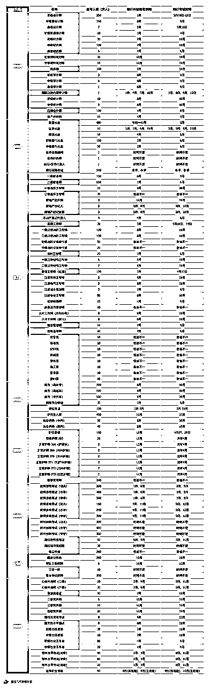
然后我就确定了自己的赛道，一个是考研，一个是云南专升本。这两个赛道我自己算比较了解，自己也有一些资料。算有一定基础吧。
关于变现路径，有好几种组合：
1、单纯卖资料（公共课、专业课）
2、送公共课资料+推荐网课（比如笔记是考研单词，那么推荐的产品就是怎么背单词的课或者就是带背训练营等）
3、送资料+本地机构推荐。
我自己选择的就是：送资料+卖资料+本地机构推荐
这里简单说一下我的设备：两个手机、一个平板、三个账号、两个微信号
接着就是要思考怎么打造爆款笔记，航海手册里面也有提到，最开始就是模仿，模仿，模仿。
然后希平教练就说体验100个同行，找100篇对标笔记
在这里有一个小tips：新手小白不建议用爬取软件或者AI洗稿。我第一天就是用后羿采集器一会儿就爬取了一堆笔记。
然后就是筛选点赞多的笔记，直接复制粘贴的无脑抄。但是我自己发就是几百小眼睛。
后来知道，出现这个问题是因为自己还没有网感，如果只是看数据，根本不知道人家是账号权重高，还是图片火，还是标题火，还是发布的时间节点。
所以建议新手，手动刷小红书。
第一可以提高网感；
第二可以增加账号权重；
第三就是训练小红书背后算法（你总是刷考研资料，以后打开小红书首页推荐都是考研资料；你总是刷考研辅导班，给你推荐考研辅导班内容）
关于体验100个同行、100个笔记，我还没有做完这个工作。我觉得就是边做，边发，边思考吧，总不能等100个笔记看完再开始发笔记，那时间都过去了。
而且手动刷笔记+整理成表格，我觉得这个工作还是很枯燥的。（这个时候就感慨，搞钱不易啊，所有漂亮的数据都不是随便出来的）
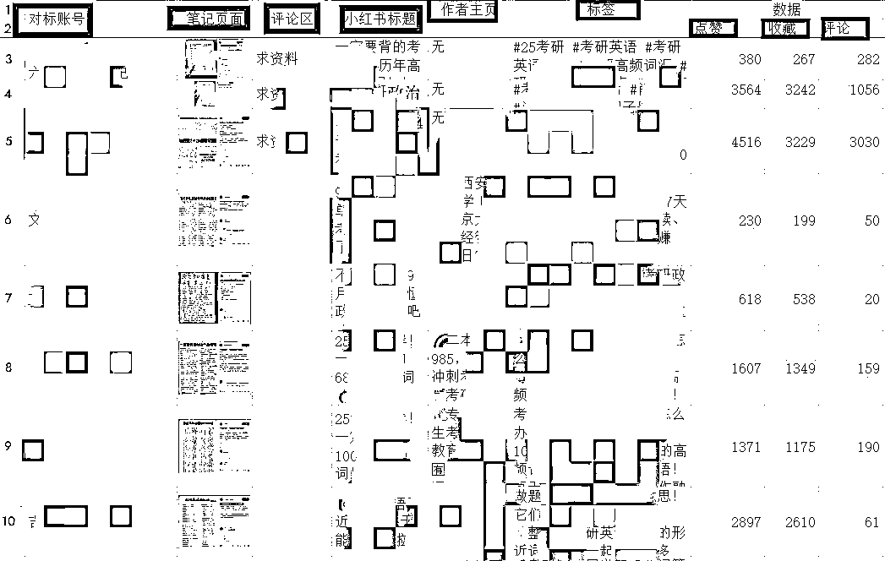
这里就要感谢小红书这个平台了，他是懂人性的。我发的笔记每天都有人点赞，也有人通过笔记进行私信，所以这个就是我坚持发笔记的原因了。
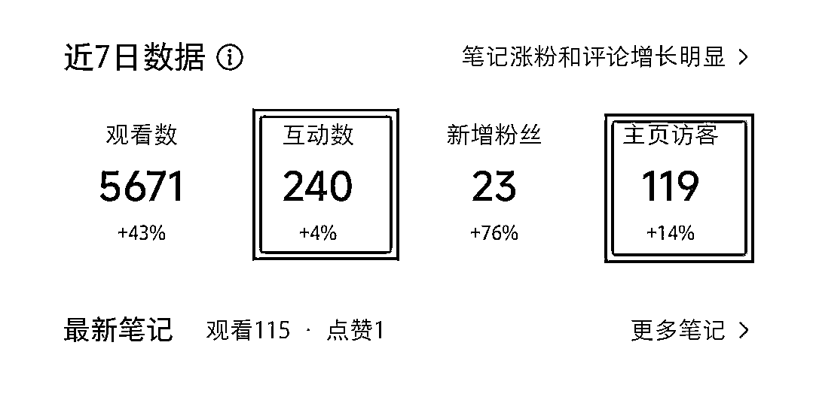
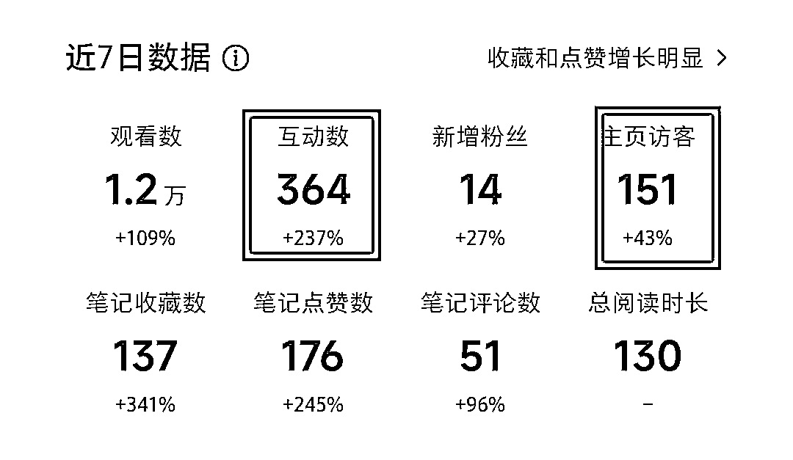
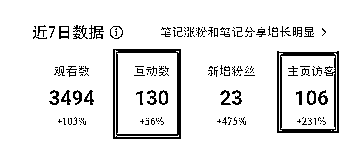
我觉得我现在刚进入平台就是一个小卡拉米，如果不太过分，平台也不会怎么管的。
我的方法就是：在平板上写下我的微信号，然后拍照发了一个笔记。有人私信要资料就推荐这个笔记。有人评论区要资料就回复“私信学姐发你哦”。
我基本上不会在小红书上面聊天，我也没有建群。我感觉建群了就要去维护，还有被举报的风险（同行进群，看到你发联系方式，截图举报，包成功的）
小tips：小红书昵称+小红书头像要和微信是同步的（增加信任感吧）
有人加上微信后，就要开始搞钱了。小钱钱，真心甜。开启搞钱大业。
我的话术：嗨，这里是XX学姐。感谢你的信任添加微信。如果需要以下资讯可以回复数字哦。
1、专升本word资料（免费）
2、专升本历年真题49元（资料+课程）
3、专升本网课（1999课程+教材）
4、云南专升本志愿填报指导（免费）
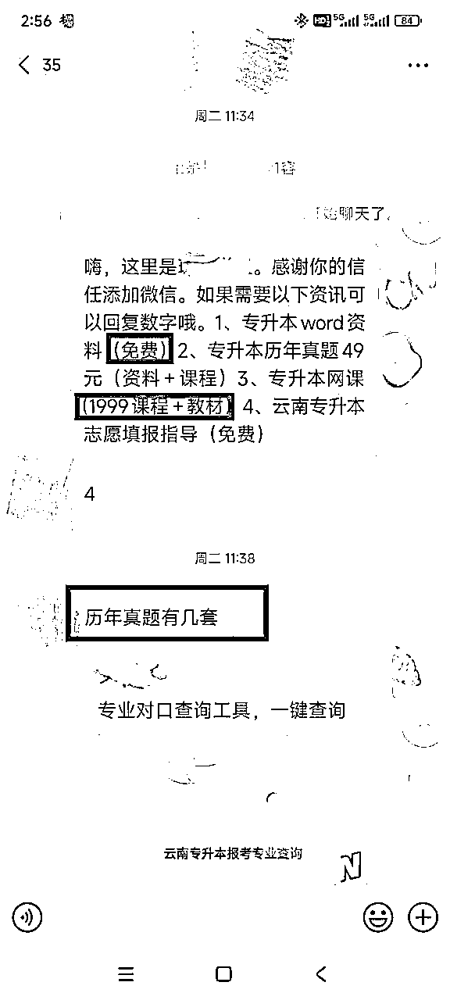
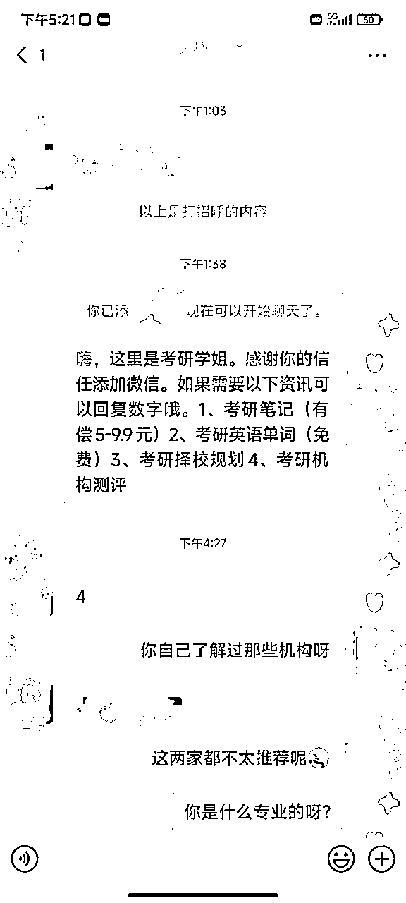
加上微信的，我都是直接发这么一个话术的。如果回复免费资料的，我发完以后。会让她去小红书笔记下面给个好评（增加笔记热度），然后再问一下是计划报班还是自学。
如果自学那基本上就不会怎么聊天了，如果说有报班计划，或者有点犹豫的，就会开始详细的聊聊聊。
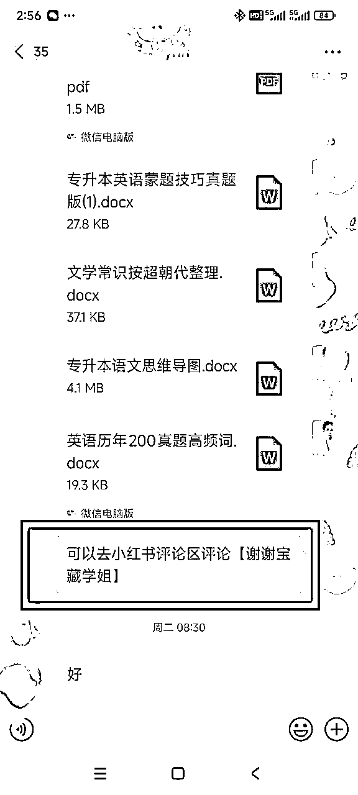
因为加上微信的，说明你这里都有他非常需要的东西，所以我觉得我们的目的性也可以强一些。有的就会直接问需要的资料。
如果是付费资料，那就告诉他转账，我给你发。
如果需要辅导班，那么就详细的聊一下辅导班的情况。
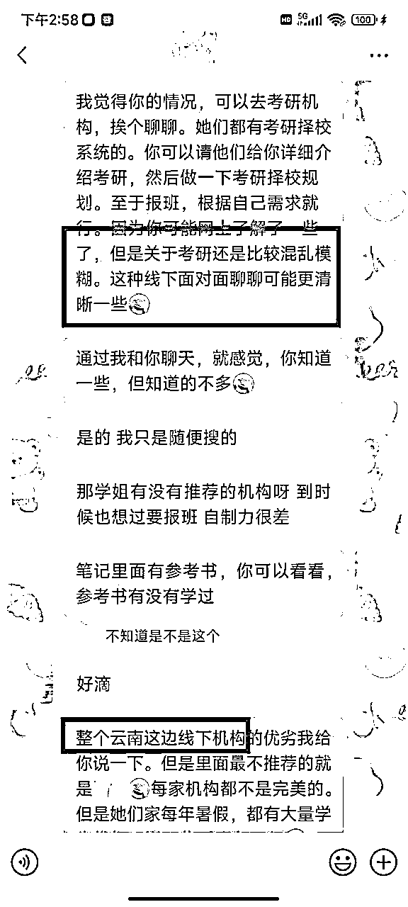
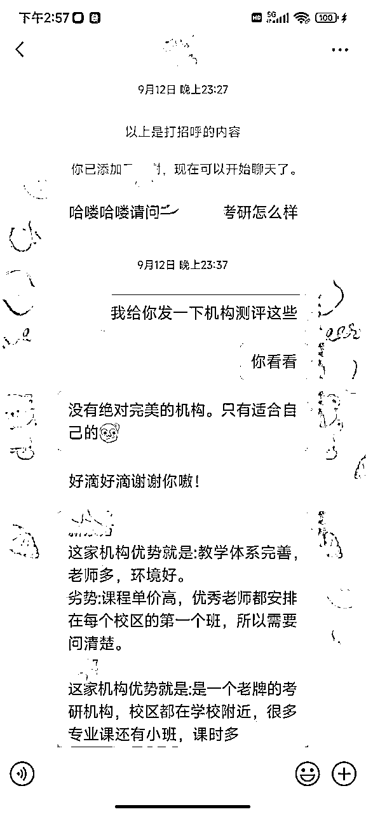
1、专升本：卖资料300元，小程序拉新16元，课程返点922元。
2、考研：卖资料15.6元，机构推荐课程返点6480元。
问：买的资料有水印怎么办？
答：如果有人要买，先收钱，然后把资料链接发过去。大多数情况下就没有后文了。不会有人来问你，为啥这个水印不是你的名字啊？
问：爆款笔记直接抄吗？
答：1比1的抄。如果担心违规，那么图片照着原笔记的样子自己做一遍。文案照着原笔记改换几个词。如果担心被举报的话，把自己抄的博主拉黑（预防举报）。基本上就没什么问题了。
问：一定要一卡、一号、一机吗？
答：航海手册给这样的建议是出于严谨性。想要做大做强那就是疯狂铺账号数量。所以需要一卡一号一机。但是小白入行，一个人能搞好一个好的号都非常不错了。所以不用太纠结什么卡号机的关系，也不用太纠结连不连WiFi的问题。
以上就是我的分享，我觉得能这么快跑通，主要还是因为变现路径想明白了。这样子在搭建话术，收集资料的时候，自己目标性也会很强。
期间就是收集资料，写笔记，搞话术，联系培训机构谈合作。如果只是卖资料，在前期流量没那么大的情况下，我应该没办法坚持搞搞搞了。